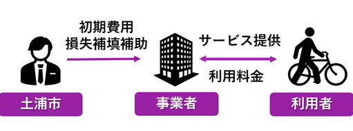

地域別構想Regional Concepts
中央地域
背景と将来像
中央地域、特に土浦駅西口地区は、大きく2つの課題を抱えています。
第一の課題は中心市街地の衰退です。築40年のモール505では74店舗中26店舗が空き店舗となり、築52年のパティオビルは旧耐震基準の建物のため安全面での対応が必要となっています。こうした状況が中心市街地の衰退に拍車をかけています。
第二の課題は防災面の脆弱性です。土浦駅周辺は浸水想定区域に位置しているにもかかわらず、浸水時の避難場所までの距離が遠いという問題があります（図C-1）。
図C-1 土浦駅周辺の浸水危険性
（課題グループE班の図を加工した）
しかし、土浦駅は1日平均14,138人が利用する交通の要所であり、地域の発展可能性は十分にあります。この特性を利用し課題を解決するため、中央地域の将来像を定め、2つの施策を以下のように提案します（図C-2）。

図C-2 中央地域の将来像と2つの施策
施策①
一つ目の施策は、土浦駅西口の再開発です。
再開発の具体的な内容として、モール505の改修、パティオビルの刷新、空中歩道「あるかすロード」の設置、屋上広場の設置を行います（図C-3）。現在、モール505付近の高架下では子供たちがゲームや談笑する姿が見られたため、改修したモール505内には児童館を設けます。より安全に楽しめる施設を設けることで、衰退してしまったモール505の活気を取り戻すことを目指しています。また、パティオビルとモール505の上に屋上広場を設置し、市民にとっての憩いの場として愛されながらも震災時は垂直避難場所として利用します。
事業スキームとしては従前の権利を新築建物の床や新たな土地に転換する権利変換方式を採用します。まず土地所有者や借地権者が参加する再開発組合を設立します。その後、組合が主体となり、民間デベロッパーと協力して事業を推進します。市は資金面や手続き面で組合を支援し、事業の円滑な進行のサポートを行います。モール505から駅を繋ぐ空中歩道「あるかすロード」の建設・児童館の設置にかかる費用は、市が負担し、その負担を軽減するためにクラウドファンディング型ふるさと納税を行います（図C-4）。
この再開発は市だけではなく民間デベロッパーにもメリットが存在します。それは不動産価格が上昇する可能性が高いエリアを獲得できる点です。その根拠として2つあります。1つ目が土浦市がつくばエクスプレス（TX）の延伸を目指していることです。現在、TX沿線の地域である流山市やつくば市は急激に成長しています。そのことから土浦市もTX延伸が叶えば、将来的な発展が期待できます。2つ目がこの再開発によって「あるかすロード」が生まれ、駅周辺の回遊性が向上し、パティオビルやモール505への来訪がより容易になることです。現在、モール505北側地域から通勤通学で駅を利用する市民は、信号や横断歩道のある地上の道を通る必要があるが、再開発後はモール505から土浦駅まで同じ階層でつながることで、より安全で便利な動線が確保されるため、パティオビルやモール505への来訪者が増加することが期待されます。これらの理由から民間デベロッパーにもメリットがある再開発になると考えます。

図C-3 再開発の詳細
図C-4 再開発の事業スキーム
施策②
二つ目の施策は、電動アシスト付き自転車のシェアサイクル拡大です。
施策の具体的な内容としては、現在ステーション数が12か所、台数が約25台で運営されているシェアサイクル事業を市が資金面で補助し、拡大を目指すことです。
事業スキームは、土浦市がシェアサイクル事業者の初期費用を負担し、事業者が市民に対してサービスを提供します。利用料金は事業者に入りますが、収支がマイナスの場合、土浦市が補填を行う仕組みになっています（図C-5）。事業費用としては、初期費用が700～1400万円（電動アシスト付き自転車30台、ステーション6か所）、年間のサービス維持費用が約1300万円と見込んでいます。
図C-5 電動アシスト付き自転車のシェアサイクルの事業スキーム
このサービスは、中央地域外から土浦駅周辺施設（モール505、市役所など）を訪れる利用者をメインターゲットとしており、これまで目的の施設のみの利用にとどまっていた来訪者の行動範囲を広げ、イオンモール土浦や亀城公園周辺の店舗への回遊を促進することを目指しています（図C-6）。また、「つちうらランチマップ」（図C-7）を活用し、中央地域にある魅力的な店舗を利用してもらうことで、中心市街地の活性化につなげる計画です。

図C-6 シェアサイクルのターゲット

図C-7 つちうらランチマップ
効果
土浦駅西口の再開発と電動アシスト付き自転車のシェアサイクル拡大により以下の3つの効果が期待されます。
1. 中心市街地活性化
新モール505、新パティオビルの設置によりさまざまな世代を対象とした魅力的なテナントが入ることやいつでもだれでも入れる屋上広場を設置することで様々な世代の多くの人が集い、市街地の活性化につながることが期待されます。
2. 回遊性の向上
モール505、パティオビル、アルカス土浦を繋ぐ空中歩道「あるかすロード」を設置することで、土浦駅前の回遊性の向上が期待されます。回遊性を階層移動や道路の横断なく移動できる面積として評価すると再開発により移動可能な床面積が17410㎡から22160㎡となり回遊性が1.27倍に上昇すると評価できます。また、前述の通り、中央地域外から土浦駅周辺施設（モール505、市役所など）利用者がこれまでは目的の施設だけの利用にとどまっていたものが、シェアサイクル拡大によって、行動範囲が広がりイオンモール土浦や亀城公園周辺のお店までアクセス可能になり、中心市街地の賑わい向上にもつながると考えます。
3. 防災性の向上
パティオビル刷新のなかでパティオビルの耐震補強をすることで、現状のパティオビルより耐震性の高い建物となります。また、屋上広場は浸水時の垂直避難場所とすることで、駅周辺に滞在している市民の避難距離を現在より短縮できます。
参考文献
おおつ野地域
背景と将来像

ここに説明を書きます。サンプルテキスト。ここに説明を書きます。サンプルテキスト。ここに説明を書きます。サンプルテキスト。
施策
囲むこともできます効果
参考文献
神立地域
背景と将来像
神立駅周辺では、駅を境に北はかすみがうら市、南は土浦市にわかれています。神立駅周辺では近年再開発が行われており、西口側は土地区画整理事業が行われました。東口側でも歩行者専用道路の整備が行われ、市民が暮らしやすいまちづくりへの動きも進んでいます。一方で、現在神立駅の東口側はかすみがうら市の住宅地と土浦市の市街化調整区域が隣接し、土地が上手に活用されていない状態です（図K-1）。かすみがうら市にとって神立駅近辺は重要な拠点であり、この地域で質の良い住環境の整備やサービスの提供を行うためには、お互いの市がよりよい協力関係を築いていくことが大切です。

図K-1 神立駅周辺の様子（Google Mapを加工）
さて、土浦市の荒川沖駅周辺や神立駅の西側などを見てみると、車通りが多いにもかかわらず、道幅が狭く危険なエリアが存在します。街中に駐車場が点在しており、自動車を利用するにしても歩行者として利用するにしても不便な状態です。このような都市計画が神立駅東口側でも行われた場合、地域の不便性が解消されずむしろ将来的に住みにくい場所となってしまいます。また、神立駅東口側にはスーパー等の生活商業施設がなく、住宅地の創出だけでは生活の不便さに欠ける恐れがあります。神立駅東側ではこのような無秩序な開発を防ぎ、生活基盤や道路基盤を整えて、市民にとって暮らしやすいまちづくりを考える必要があります。
そこで、神立地域の将来像を以下のように定めました（図K-2）。

図K-2 神立地域の将来像と施策
施策
神立駅東口側に対して、土浦市では現在まちづくりの方針を検討中であることが都市計画課の方へのヒアリングでわかりました。そこで、今回の提案ではマスタープラン[k-1]にある住宅創出の推進だけではなく、道路の整備や東口側の商業圏の設定を提案します。
現在の道路は自動車が多く通るにもかかわらず幅員が狭いものや歩道の整備がされていない場所があります。そのような道路の整備だけでなく、この地域に住宅地が出来た際の渋滞の可能性を見越した新たな道路の設定や駐車場の配置が必要です。
効果
以上の施策の効果として神立駅東口側の利便性の向上と秩序だった住宅地の形成が見込まれます。
現在神立駅東口側に生活商業施設がないことで西口側まで買い物に行く必要があります。図K-3は、神立東一丁目地区からの現在の買い物施設までの所要時間と、新たに東口側（神立駅前・神立東一丁目地区内）に生活商業施設を設けた場合の所要時間を分析したものです。現在の買い物施設までは平均片道12分かかっていますが、東口側に新たに設けた場合には、約5～8分と最大7分の時間の短縮に繋がります。また、通勤で神立駅を使う市民がいることを考えると、帰りがけに一度西口側へ降りる、という手間をなくすことことで暮らしやすさの向上に貢献するものであると考えられます。
図K-3 神立駅東側に生活商業施設が出来た場合の買い物施設までの距離の分析結果
参考文献
南部地域
背景と将来像

ここに説明を書きます。サンプルテキスト。ここに説明を書きます。サンプルテキスト。ここに説明を書きます。サンプルテキスト。
施策
囲むこともできます効果
参考文献
新治地域
背景と将来像
新治地域は豊かな自然に囲まれた地域であり、土浦市の農業ブランドを支える存在となっています。旧新治庁舎周辺には3校の小学校と中学校が統合された新治義務教育学校やJA水郷つくばサンフレッシュ新治店（以後、JA水郷つくば）、新治地区公民館が立地しています。JA水郷つくば本店の担当者様へのヒアリングから、2023年度のJA水郷つくばの来客数は約23万人であると伺っており（図N-1）、新治地域の地域内交流の拠点として旧新治庁舎周辺のポテンシャルは十分にあると考えられます。

図N-1 JA水郷つくばの年間来客数（各年度2月からの累計人数）
その一方で、新治地域は土浦市の中で人口が少ない地域であるうえ、老年人口が多く増加傾向、また新治地域内の人口もその中で分散している状況です[n-1]。また、新治地域も他の土浦市内の地域と同様に公共施設の老朽化が進んでおり、施設の新造やリニューアルが求められています。そして、各公共施設の利用者は、求められる利用者数よりも低い水準となっています[n-2]。新治地域では小学校の統合など一部の公共施設の複合化が進み、他の公共施設の複合化も検討段階にありますが、具体的な進捗は見られていません。
したがって、新治地域は人口が少なく分散しているにもかかわらず、各施設の利用者自体もそれぞれの施設に分散し、利用者の少ない状況が課題となっています。これは施設の維持費がかかるだけではなく、市民のコミュニティの分散にも繋がってしまいます。
以上より、新治地域ではJA水郷つくばの利用者が多いというポテンシャルを活用して、世代を超えたコミュニティをより強固にすること、またその機会を与える公共施設を提供することが必要です。したがって、以下の図N-2のように新治地域の将来像を定め、施策を提案します。
図N-2 新治地域の将来像と施策
施策
以上の課題の解決と、ポテンシャルを活かして、私たちは公共施設3つ（新治児童館、新治総合福祉センター、農業センター）を、JA水郷つくばと新治公民館、新治トレーニングセンターなどの旧新治庁舎周辺地区の既存施設付近（＝事業地）に複合することを提案します（図N-3）。
図N-3 複合施設の場所
効果
公共施設の複合により、以下の3つの効果が期待されます。
1. 施設利用者増加による交流機会増加
図N-4 各施設の利用者数
2. 施設への移動距離（時間）の短縮
また、事業地内への複合は市民の移動時間の短縮に繋げられます。図N-5は、現在の公共施設それぞれまでの新治地域に住む市民一人あたりの直線移動距離を表したものです。事業地の施設であるJA水郷つくば、新治地区公民館、新治トレーニングセンター、保健センター新治分室が1,950m前後であるのに対し、事業地へ複合する新治総合福祉センター、新治児童館、農業センターはおよそ2,300m～2,700mあります。このことから現在の3施設は、平均的により移動距離が短く利用しやすい場所に移転し、その機能をまとめることで市民にとっての利便性の向上に寄与できると考えられます。
図N-5 各施設までの平均移動距離
3. 施設維持・建設費用の削減